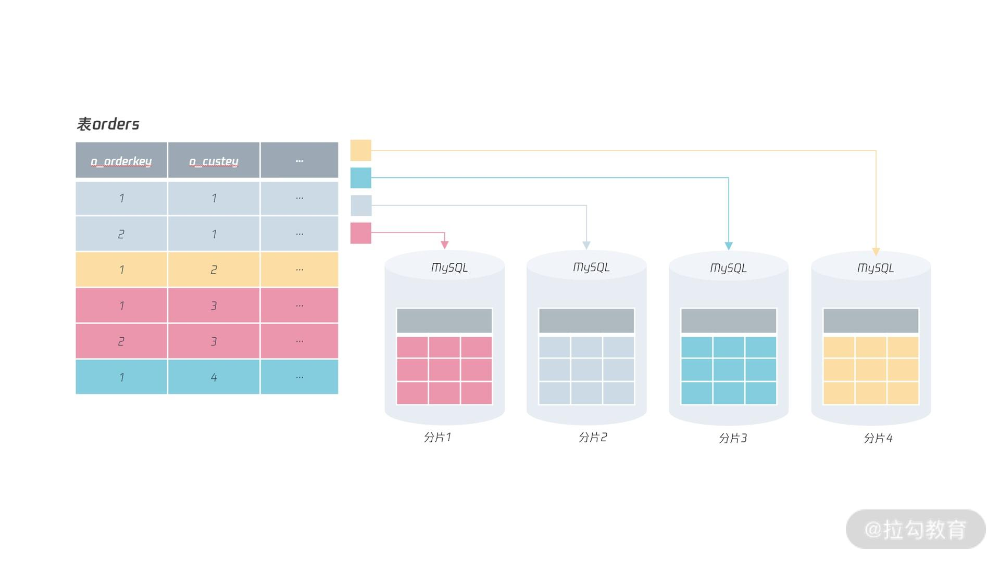
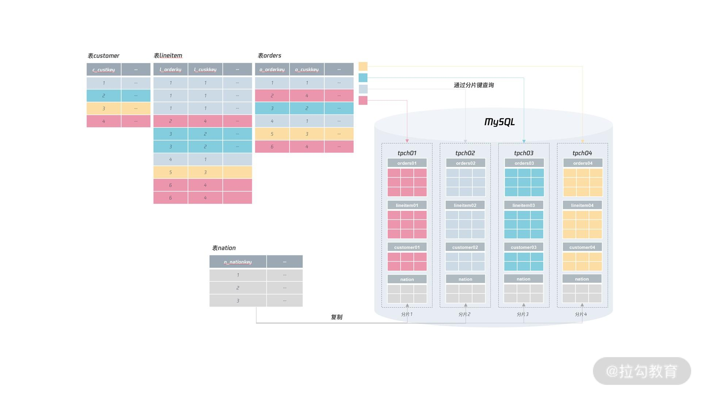

- 00 开篇词 从业务出发，开启海量 MySQL 架构设计.md.html
- 01 数字类型：避免自增踩坑.md.html
- 02 字符串类型：不能忽略的 COLLATION.md.html
- 03 日期类型：TIMESTAMP 可能是巨坑.md.html
- 04 非结构存储：用好 JSON 这张牌.md.html
- 05 表结构设计：忘记范式准则.md.html
- 06 表压缩：不仅仅是空间压缩.md.html
- 07 表的访问设计：你该选择 SQL 还是 NoSQL？.md.html
- 08 索引：排序的艺术.md.html
- 09 索引组织表：万物皆索引.md.html
- 10 组合索引：用好，性能提升 10 倍！.md.html
- 11 索引出错：请理解 CBO 的工作原理.md.html
- 12 JOIN 连接：到底能不能写 JOIN？.md.html
- 13 子查询：放心地使用子查询功能吧！.md.html
- 14 分区表：哪些场景我不建议用分区表？.md.html
- 15 MySQL 复制：最简单也最容易配置出错.md.html
- 16 读写分离设计：复制延迟？其实是你用错了.md.html
- 17 高可用设计：你怎么活用三大架构方案？.md.html
- 18 金融级高可用架构：必不可少的数据核对.md.html
- 19 高可用套件：选择这么多，你该如何选？.md.html
- 20 InnoDB Cluster：改变历史的新产品.md.html
- 21 数据库备份：备份文件也要检查！.md.html
- 22 分布式数据库架构：彻底理解什么叫分布式数据库.md.html
- 23 分布式数据库表结构设计：如何正确地将数据分片？.md.html
- 24 分布式数据库索引设计：二级索引、全局索引的最佳设计实践.md.html
- 25 分布式数据库架构选型：分库分表 or 中间件 ？.md.html
- 26 分布式设计之禅：全链路的条带化设计.md.html
- 27 分布式事务：我们到底要不要使用 2PC？.md.html
24 分布式数据库索引设计：二级索引、全局索引的最佳设计实践
前面两讲，我们学习了 MySQL 分布式数据库架构的内容，相信现在你清楚地知道了分布式数据库的整体架构，以及数据如何进行分片。
结合第一模块的“表结构设计”，基本上你已经能完成分布式数据库架构下，表结构的设计工作。
而在分布式数据库架构下，索引的设计也需要做调整，否则无法充分发挥分布式架构线性可扩展的优势。所以这一讲，我们就来学习“在分布式数据库架构下，如何正确的设计索引？”。
主键选择
对主键来说，要保证在所有分片中都唯一，它本质上就是一个全局唯一的索引。如果用大部分同学喜欢的自增作为主键，就会发现存在很大的问题。
因为自增并不能在插入前就获得值，而是要通过填 NULL 值，然后再通过函数 last_insert_id()获得自增的值。所以，如果在每个分片上通过自增去实现主键，可能会出现同样的自增值存在于不同的分片上。
比如，对于电商的订单表 orders，其表结构如下（分片键是o_custkey，表的主键是o_orderkey）：
CREATE TABLE `orders` (
`O_ORDERKEY` int NOT NULL auto_increment,
`O_CUSTKEY` int NOT NULL,
`O_ORDERSTATUS` char(1) NOT NULL,
`O_TOTALPRICE` decimal(15,2) NOT NULL,
`O_ORDERDATE` date NOT NULL,
`O_ORDERPRIORITY` char(15) NOT NULL,
`O_CLERK` char(15) NOT NULL,
`O_SHIPPRIORITY` int NOT NULL,
`O_COMMENT` varchar(79) NOT NULL,
PRIMARY KEY (`O_ORDERKEY`),
KEY (`O_CUSTKEY`)
......
) ENGINE=InnoDB
如果把 o_orderkey 设计成上图所示的自增，那么很可能 o_orderkey 同为 1 的记录在不同的分片出现，如下图所示：

所以，在分布式数据库架构下，尽量不要用自增作为表的主键，这也是我们在第一模块“表结构设计”中强调过的：自增性能很差、安全性不高、不适用于分布式架构。
讲到这儿，我们已经说明白了“自增主键”的所有问题，那么该如何设计主键呢？依然还是用全局唯一的键作为主键，比如 MySQL 自动生成的有序 UUID；业务生成的全局唯一键（比如发号器）；或者是开源的 UUID 生成算法，比如雪花算法（但是存在时间回溯的问题）。
总之，用有序的全局唯一替代自增，是这个时代数据库主键的主流设计标准，如果你还停留在用自增做主键，或许代表你已经落后于时代发展了。
索引设计
通过分片键可以把 SQL 查询路由到指定的分片，但是在现实的生产环境中，业务还要通过其他的索引访问表。
还是以前面的表 orders 为例，如果业务还要根据 o_orderkey 字段进行查询，比如查询订单 ID 为 1 的订单详情：
SELECT * FROM orders WHERE o_orderkey = 1
我们可以看到，由于分片规则不是分片键，所以需要查询 4 个分片才能得到最终的结果，如果下面有 1000 个分片，那么就需要执行 1000 次这样的 SQL，这时性能就比较差了。
但是，我们知道 o_orderkey 是主键，应该只有一条返回记录，也就是说，o_orderkey 只存在于一个分片中。这时，可以有以下两种设计：
- 同一份数据，表 orders 根据 o_orderkey 为分片键，再做一个分库分表的实现；
- 在索引中额外添加分片键的信息。
这两种设计的本质都是通过冗余实现空间换时间的效果，否则就需要扫描所有的分片，当分片数据非常多，效率就会变得极差。
而第一种做法通过对表进行冗余，对于 o_orderkey 的查询，只需要在 o_orderkey = 1 的分片中直接查询就行，效率最高，但是设计的缺点又在于冗余数据量太大。
所以，改进的做法之一是实现一个索引表，表中只包含 o_orderkey 和分片键 o_custkey，如：
CREATE TABLE idx_orderkey_custkey （
o_orderkey INT
o_custkey INT,
PRIMARY KEY (o_orderkey)
)
如果这张索引表很大，也可以将其分库分表，但是它的分片键是 o_orderkey，如果这时再根据字段 o_orderkey 进行查询，可以进行类似二级索引的回表实现：先通过查询索引表得到记录 o_orderkey = 1 对应的分片键 o_custkey 的值，接着再根据 o_custkey 进行查询，最终定位到想要的数据，如：
SELECT * FROM orders WHERE o_orderkey = 1
=>
# step 1
SELECT o_custkey FROM idx_orderkey_custkey
WHERE o_orderkey = 1
# step 2
SELECT * FROM orders
WHERE o_custkey = ? AND o_orderkey = 1
这个例子是将一条 SQL 语句拆分成 2 条 SQL 语句，但是拆分后的 2 条 SQL 都可以通过分片键进行查询，这样能保证只需要在单个分片中完成查询操作。不论有多少个分片，也只需要查询 2个分片的信息，这样 SQL 的查询性能可以得到极大的提升。
通过索引表的方式，虽然存储上较冗余全表容量小了很多，但是要根据另一个分片键进行数据的存储，依然显得不够优雅。
因此，最优的设计，不是创建一个索引表，而是将分片键的信息保存在想要查询的列中，这样通过查询的列就能直接知道所在的分片信息。
如果我们将订单表 orders 的主键设计为一个字符串，这个字符串中最后一部分包含分片键的信息，如：
o_orderkey = string（o_orderkey + o_custkey）
那么这时如果根据 o_orderkey 进行查询：
SELECT * FROM Orders
WHERE o_orderkey = '1000-1';
由于字段 o_orderkey 的设计中直接包含了分片键信息，所以我们可以直接知道这个订单在分片1 中，直接查询分片 1 就行。
同样地，在插入时，由于可以知道插入时 o_custkey 对应的值，所以只要在业务层做一次字符的拼接，然后再插入数据库就行了。
这样的实现方式较冗余表和索引表的设计来说，效率更高，查询可以提前知道数据对应的分片信息，只需 1 次查询就能获取想要的结果。
这样实现的缺点是，主键值会变大一些，存储也会相应变大。但正如我们 05 讲说的，只要主键值是有序的，插入的性能就不会变差。而通过在主键值中保存分片信息，却可以大大提升后续的查询效率，这样空间换时间的设计，总体上看是非常值得的。
当然，这里我们谈的设计都是针对于唯一索引的设计，如果是非唯一的二级索引查询，那么非常可惜，依然需要扫描所有的分片才能得到最终的结果，如：
SELECT * FROM Orders
WHERE o_orderate >= ? o_orderdate < ?
因此，再次提醒你，分布式数据库架构设计的要求是业务的绝大部分请求能够根据分片键定位到 1 个分片上。
如果业务大部分请求都需要扫描所有分片信息才能获得最终结果，那么就不适合进行分布式架构的改造或设计。
最后，我们再来回顾下淘宝用户订单表的设计：
上图是我的淘宝订单信息，可以看到，订单号的最后 6 位都是 308113，所以可以大概率推测出：
- 淘宝订单表的分片键是用户 ID；
- 淘宝订单表，订单表的主键包含用户 ID，也就是分片信息。这样通过订单号进行查询，可以获得分片信息，从而查询 1 个分片就能得到最终的结果。
全局表
在分布式数据库中，有时会有一些无法提供分片键的表，但这些表又非常小，一般用于保存一些全局信息，平时更新也较少，绝大多数场景仅用于查询操作。
例如 tpch 库中的表 nation，用于存储国家信息，但是在我们前面的 SQL 关联查询中，又经常会使用到这张表，对于这种全局表，可以在每个分片中存储，这样就不用跨分片地进行查询了。如下面的设计：

唯一索引
最后我们来谈谈唯一索引的设计，与主键一样，如果只是通过数据库表本身唯一约束创建的索引，则无法保证在所有分片中都是唯一的。
所以，在分布式数据库中，唯一索引一样要通过类似主键的 UUID 的机制实现，用全局唯一去替代局部唯一，但实际上，即便是单机的 MySQL 数据库架构，我们也推荐使用全局唯一的设计。因为你不知道，什么时候，你的业务就会升级到全局唯一的要求了。
总结
今天我们介绍了非常重要的分布式数据库索引设计，内容非常干货，是分布式架构设计的重中之重，期望各位同学反复阅读，抓住本讲的重点，总结来说：
- 分布式数据库主键设计使用有序 UUID，全局唯一；
- 分布式数据库唯一索引设计使用 UUID 的全局唯一设计，避免局部索引导致的唯一问题；
- 分布式数据库唯一索引若不是分片键，则可以在设计时保存分片信息，这样查询直接路由到一个分片即可；
- 对于分布式数据库中的全局表，可以采用冗余机制，在每个分片上进行保存。这样能避免查询时跨分片的查询。